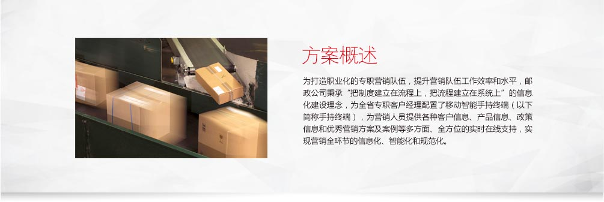
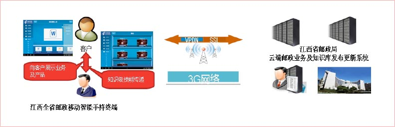
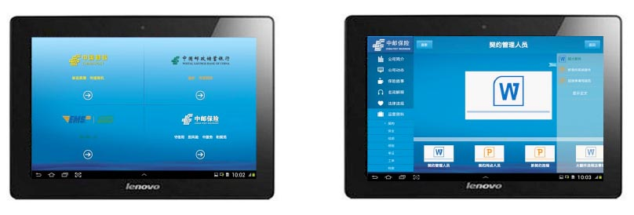

系统特点
针对邮政的客户需求，我们给出如下解决方案系统架构如下：  部署云端的邮政业务内容发布及更新系统、知识库系统；为全省的专职客户经理配发移动智能手持终端系统，通过云端周期性地对全省的专职客户经理的手持终端上的业务推介、业务宣传、方案及相关业务知识、专业技能、营销技巧、成功案例等内容进行更新。
核心功能
- A、通过视频、动画等更加直观的材料向用户展示产品、业务和方案；
B、传递知识和技能；
C、业务知识的培训和考核。 - 手持终端的选择上考虑到需要便于向用户演示产品及业务的视频和动画等内容，本次项目中采用了10寸的平板电脑，相对于传统电脑，平板电脑的电池待机时间和连续使用时间更长、携带更加轻便、操作简单、只需要简单培训即可上手，当然成本也比笔记本电脑便宜，同时联想根据江西邮政用户特点定制了专门的平板电脑，如开机动画等。
客户收益
专业的形象
借助移动智能手持终端，实现江西邮政专职客户经理与客户真正的一对一交流和展示、多媒体视频、图片、动画让用户感受更加直观和亲切，统一使用智能终端，规范的操作和流程还提升了客户经理的专业形象。
高效的知识传递和技能培训
传统方式进行业务培训和宣贯需要全省范围内组织大量人力物力来进行宣贯、宣讲，而现在只需要周期性地更新到智能终端上即可，节约了时间、也节省了成本。

联想移动互联解决方案
联想移动互联解决方案以最终用户的体验为出发点，借助移动互联、大数据分析、云计算等创新技术，通过业务流程的再造，实现了企业资源的合理规划和高效运转。
联想在移动互联领域，通过梳理客户业务流程，整合行业专业应用软件，针对客户的行业特质以及业务需求进行深度定制，目前已储备超过200余项专业解决方案。更多解决方案以及产品、案例、咨询信息，请通过以下入口进入（ID:Lenovomia）：